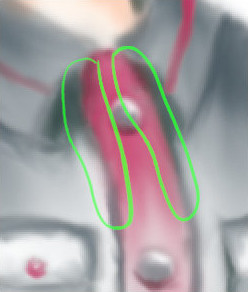

The Smudge tool evokes finger painting. It works in two ways:
-
If the Flow option is set to 0.00 (default), the Smudge tool uses the current brush to smudge colors on the active layer or a selection. It takes color in passing and uses it to mix it to the next colors it meets.
-
When the Flow option is more than 0.00, the Smudge tool works as a brush using the foreground color of the toolbox and blend it with the underlying color.
There are different possibilities to activate the tool:
-
From the main menu: → → .
-
By clicking the tool icon in the Toolbox.
-
By pressing the S keyboard shortcut.
- Shift
-
The Shift key places the smudge tool into straight line mode. Holding Shift while clicking the mouse will smudge in a straight line. Consecutive clicks will continue smudging in straight lines that originate from the end of the last line.
- Ctrl
-
Using Ctrl with Shift, you can constrain the angle between two successive lines to vary by steps of 15°.
Normally, tool options are displayed in a window attached under the Toolbox as soon as you activate a tool. If they are not, you can access them from the main menu through → → which opens the option window of the selected tool. The available tool options can also be accessed by double clicking the corresponding tool icon in the Toolbox.
- Opacity, Brush, Size, Aspect ratio, Angle, Spacing, Hardness, Force, Dynamics, Dynamics Options, Apply Jitter, Smooth stroke, Lock brush to view, Expand Layers
- See the Common Paint Tool Options for a description of tool options that apply to many or all paint tools.
- Hard edge
-
This option gives a hard contour to the smudged area.
- No erasing effect
-
If smudging will decrease alpha of some pixels; this alpha is not decreased if this option is checked, and so pixels are not erased. This is useful to fill a gap between two color areas.
Figure 14.84. An example of "No erasing"

Without "No erasing effect"

With "No erasing effect"
- Sample merged
-
If you enable this option, sampling is not calculated only from the values of the active layer, but from all visible layers.
For more information, see the Glossary entry.
- Rate
-
This option could be called "Smudge length" since it sets the length of the smudging effect in a stroke.
- Flow
-
We already saw the different behavior of the “Flow” option when it is set to 0.00 (works as the original Smudge tool) and set to more than 0.00 (uses the foreground color for smudging).

Here are comments and examples for the “No erasing effect” and “Flow” options from gimp-forum.net: